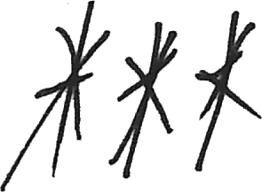
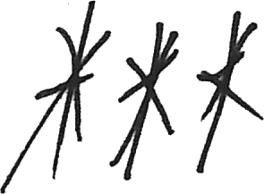

Actually, I feel strongly about this notion of identity and being, etc. The thing I find most contemptuous in the act of living is the yearning for some greater identity, and to ask yourself the worst question: who am I? I find the former an utter joke. To align yourself with some sects of other wandering apes is to admit your worth not in terms of your whole, but instead as a fraction of what is a caricature of another.
Simply being is something one cannot contend with, but to advertise, to flaunt such properties, to be a mere "man" or "Chinese," is to say, I am no more nuanced, unique, or individual than all of the rest of them. As Wittgenstein says, “That identity is not a relation between two items is obvious; two terms plainly are not identical, and one term cannot be, for what is it identical with?”
And so, naturally, one may ask, what is the purpose of such a relation, in its purpose and otherwise, if not identity? To me, and to draw a simple answer to the latter idiocy, the answer is as plain and simple-minded as those who choose to relate themselves as such: it is simply a costume of expression used to feel belonging socially, a crude biological instinct for survival, a sensus identitet, to parody John Calvin's sensus divinitatis. To wish to draw oneself in relation to others is driven either by complete ignorance of oneself or by a pandering social performance for others.
Either way, to obsess over such a labeling of self, which is nothing more than a referent, completely overlooks the formation of the ontological self. Such games of social circusing do not at all confront the only important question in deciding what exists in reality: what you think and what you do. To know who you are, ask only these simple questions: what do you want to do, and why? Higher-order questioning will eventually lead to the set of truths that ground your ontology, and thus, a sort of realist identity grounded in self.